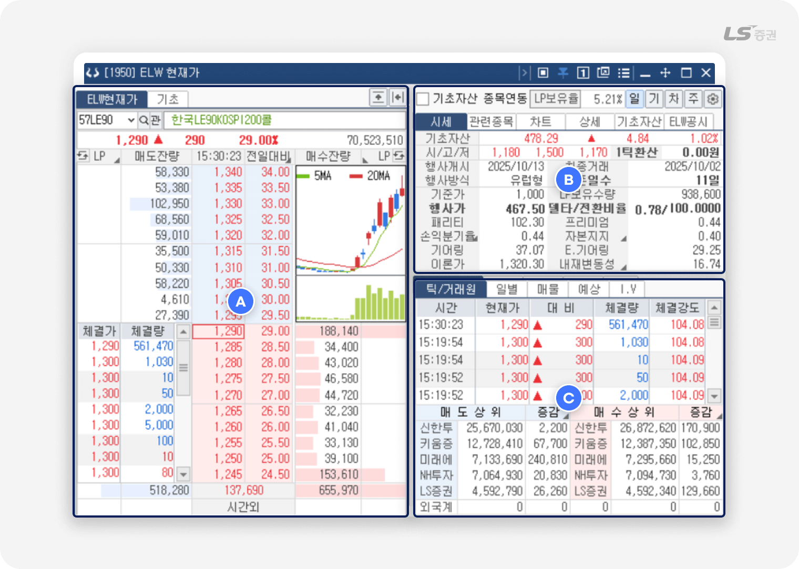
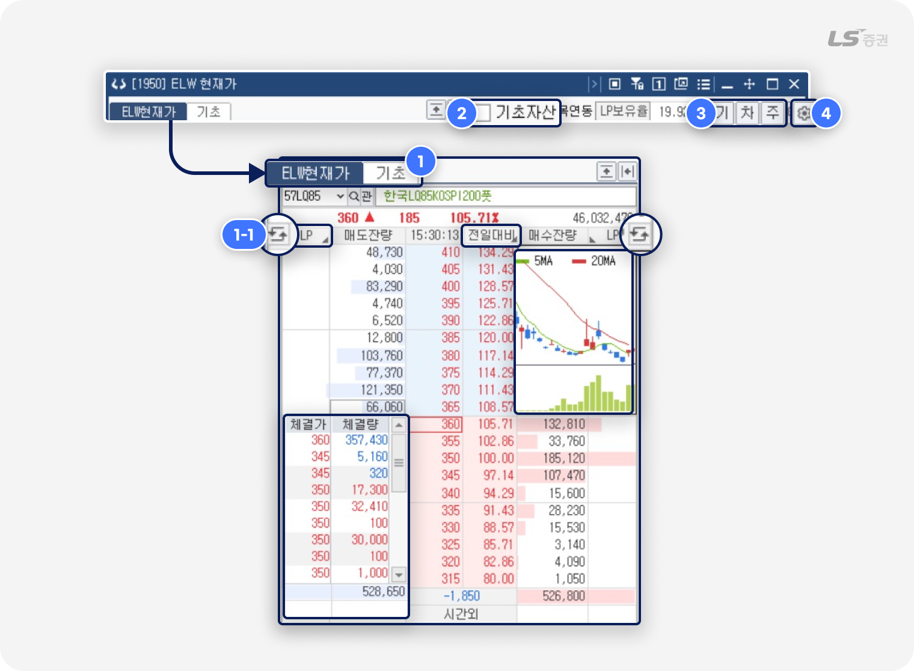
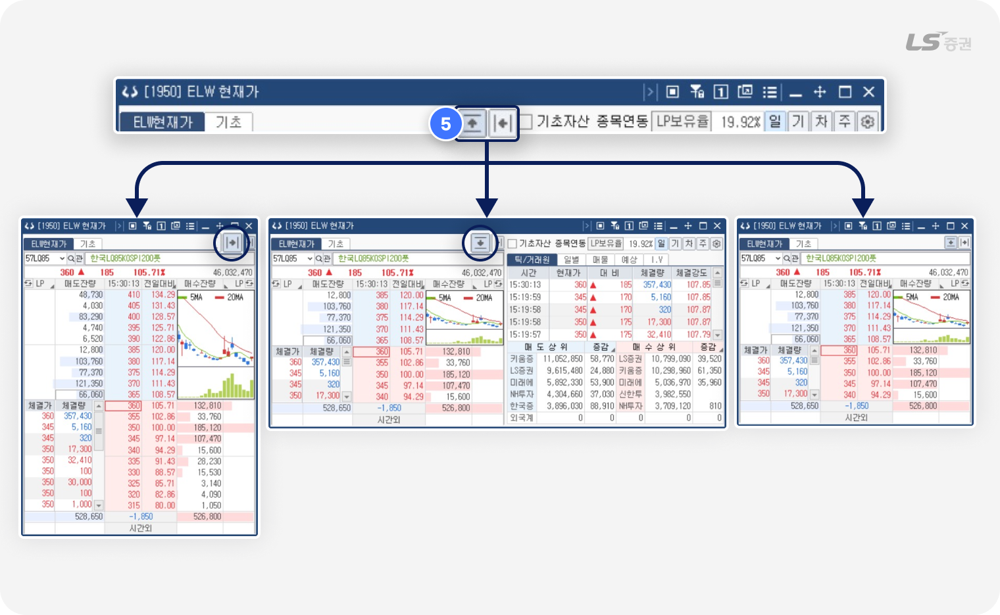
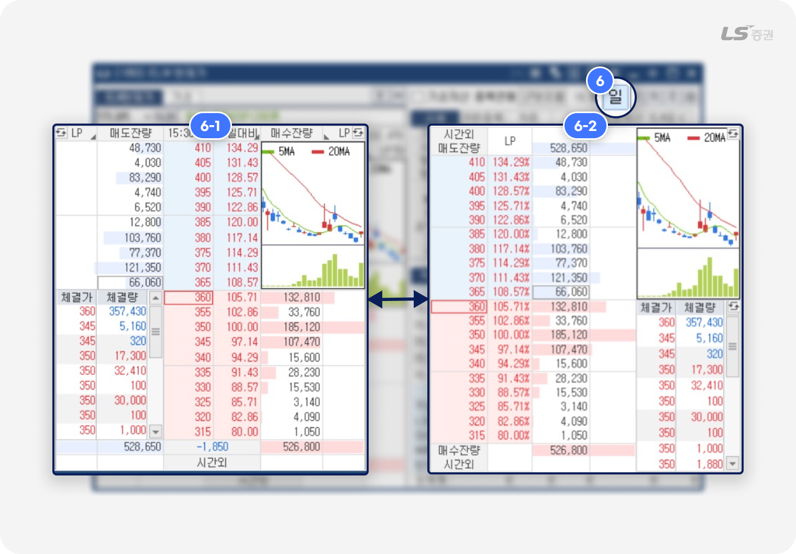
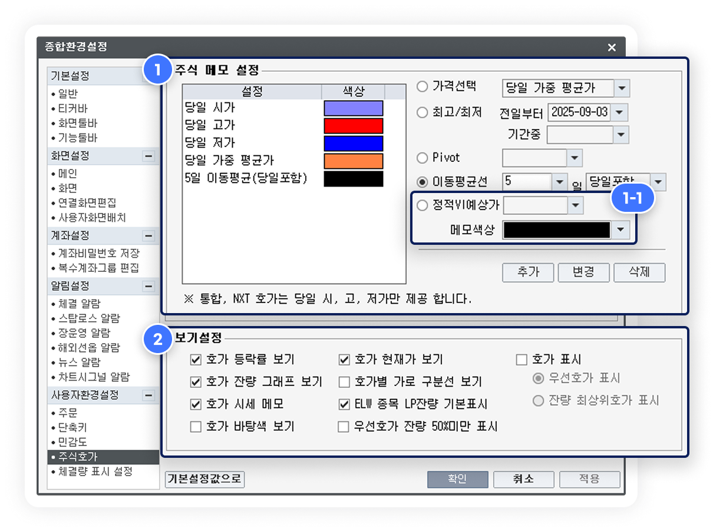
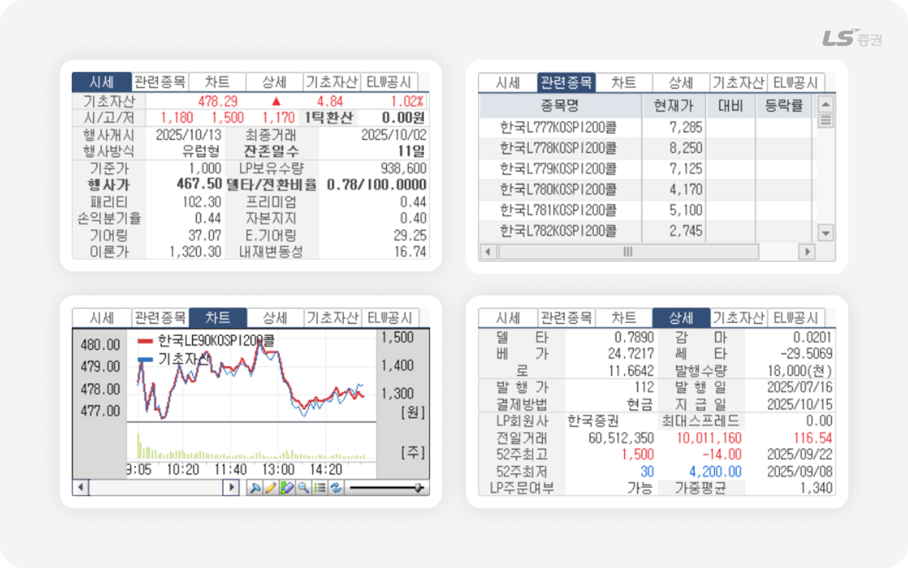
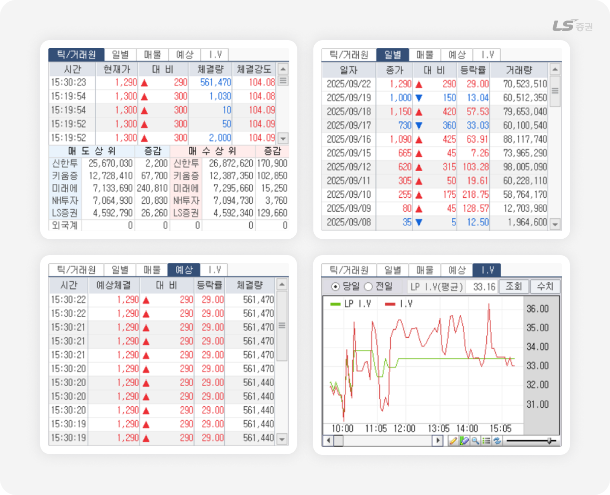

.png)
[1950] ELW현재가
ELW 빠른 시세 파악,
모든 흐름을 한 화면에
[1950] ELW 현재가 화면은 개별 ELW 종목의 현재 가격, 호가, 체결 동향, 기초자산 정보 등을 한눈에 확인할 수 있습니다.
주식과 달리 가격 변동성이 높고 거래 구조가 복잡한 ELW의 특성상, 신속한 시세 파악과 조건별 지표 점검이 특히 중요합니다.
본 화면에서는 호가창과 차트는 물론, 기초자산 연동 정보와 거래원 현황까지 함께 제공되어 투자 판단에 필요한 핵심 데이터를 효율적으로 확인할 수 있습니다.
기초자산부터 거래원까지 단번에 확인,
이 화면이 호가를 읽는 기준점인 이유!
| 특징 | 이런 점이 좋아요 |
|---|---|
| 기초자산 및 연동 지표 조회 | 기초자산 가격, 이론가, 행사가, 패리티 등 ELW 주요 지표 제공 |
| 거래 현황 종합 점검 | 차트, 거래원까지 화면 하나로 매매 수급과 시장 흐름을 동시에 파악 가능 |
필요한 기능만 모아, 간결하게 정리한
01기본 화면 구성
LS증권의 [1950] ELW 현재가는 호가, 체결, 차트, 기초자산 지표를 제공하며, ELW의 가격 구조와 수급 동향을 편리하게 모아서 확인할 수 있어 유용합니다.

화면은 다음과 같이 3개의 영역으로 나누어집니다.
| 번호 | 영역 | 주요기능 |
|---|---|---|
| A | 호가 / 체결 정보 | 선택 종목의 매수/매도 호가 및 체결량 등의 정보를 확인할 수 있습니다. |
| B | 차트 / 지표 | 단기 차트, 기초자산 가격, 행사가, 내재변동성 등 ELW 주요 지표를 제공합니다. |
| C | 거래량 정보 | 틱별 체결 현황과 증권사별 매수·매도 순위 조회로 수급 동향을 파악할 수 있습니다. |
가격의 맥을 읽는 첫 번째 창
02호가 / 체결 정보 (A영역)
호가 및 체결 정보 조회

-
1
ELW현재가 / 기초자산 탭
- ELW현재가 호가 또는 기초자산 호가를 전환하며 조회할 수 있습니다.
-
시세 전환 버튼(1-1번) 클릭 시 우측 상단, 좌측 하단 시세정보 화면을 차트, 체결량 등으로 전환할 수 있습니다.
이외에도 LP, 전일대비 항목 클릭 시 표시되는 지표를 변경할 수 있습니다. - 호가 더블클릭 시 주문화면에서 주문을 접수할 수 있습니다.
-
2
기초자산 종목연동
- 기초자산 종목이 변경되면 현재가 등 다른 기초자산 시세 조회 화면에서도 동일하게 종목이 변경됩니다.
-
3
상장기업분석 / 차트 / 주식주문
- '기' '차' '주' 버튼 클릭 시 각각 [3301] 상장기업분석, [4004] ELW종합차트, [5100] 주식주문 화면으로 이동합니다.
-
4
주식호가 표시 설정
- 설정 버튼 클릭 시 호가창 표시 방법을 상세하게 설정할 수 있습니다.

-
5
화면 확장 / 축소 버튼
- 호가 영역, 차트 / 지표 영역, 거래량 정보 영역을 다양한 형태로 확장하거나 축소할 수 있습니다.

-
6
호가창 일자 / 대칭 전환
- 화면 우상단 '일' 또는 '대' 버튼 클릭 시 호가창 표시 방법을 대칭(6-1번) 혹은 일자(6-2번) 간 전환할 수 있습니다.
LP(유동성 공급자)란?
- LP(Liquidity Provider, 유동성 공급자)는 투자자가 언제든지 원할 때 거래할 수 있도록 매수 · 매도 호가를 지속적으로 제시하며, 유동성을 공급하는 중재자 역할을 합니다. 이를 통해 기초자산과 ELW 가격 간의 괴리를 완화하고, ELW 시장의 안정성을 높이는 데 기여합니다.
- 시장 참여자들의 실제 수급이 왜곡되는 것을 방지하기 위해, ELW 거래량이나 관여율 지표에서는 LP 거래를 별도로 구분해 해석하는 것이 필요합니다. 또 투자주의종목 지정 기준을 산출할 때에도 LP거래량은 제외하고 계산합니다.
주식호가 표시 설정
-
편리한기능 - 설정 - 종합환경설정 - 주식호가 메뉴에서 호가창 내 표시 방법을 원하는 형태로 편리하게 설정할 수 있습니다.

-
1
주식 메모 설정
- 현재가 당일 시가, 고가 등 요건에 해당하는 호가 우측에 지정 색상을 표시합니다.
- 요건 및 색상을 직접 추가, 변경, 삭제할 수 있습니다.
- 설정한 메모는 다른 호가창의 주식 메모에도 공통으로 적용됩니다.
- 활용 예시로, 정적VI예상가 메모 설정(1-1번)에서 상한가 선택 후 메모색상을 빨간색, 하한가 선택 후 메모색상을 파란색으로 설정하면 호가창에서 정적VI예상가를 더욱 쉽게 인지할 수 있습니다.
-
2
보기설정
- 호가 등락률 보기 : 호가 우측 등락률 표시 여부를 선택합니다.
- 호가 현재가 보기 : 현재가 주변에 테두리선 강조 여부를 선택합니다.
-
호가 표시 :
우선호가 또는 잔량 최상위호가에 해당하는 호가와 등락률의 강조 표시 여부를 선택합니다.
- 호가잔량 그래프 보기 : 호가 잔량표시란에 막대그래프 표시 여부를 선택합니다.
- 호가별 가로 구분선 보기 : 호가와 잔량표시란에 가로선 표시 여부를 선택합니다.
- 호가 시세 메모 : (1번)에서 설정한 주식 메모 표시 여부를 선택합니다.
-
ELW 종목 LP잔량 기본표시 :
LP(유동성공급자, Liquidity Provider) 공급 물량의 강조 여부를 선택합니다.
- 호가 바탕색 보기 : 호가영역 색상을 단일 및 그라데이션(Gradient) 중 선택합니다.
-
우선호가 잔량 50%미만 표시 :
우선호가 잔량이 50%인 경우 잔량 테두리선 강조 여부를 선택합니다.
세부 정보까지 한눈에 파악하는
03차트 / 지표 (B영역)
시세 · 관련종목 · 차트 · 상세 · 기초자산 · ELW공시
선택한 ELW 종목의 시세를 비롯해 관련종목, 차트, 옵션민감도 등 주요 지표를 확인할 수 있습니다.

ELW 주요 용어 설명
- 행사가격 : ELW 보유자가 권리를 행사할 수 있는 기초자산의 가격
- 행사비율 : ELW 1주가 기초자산 몇 주에 해당하는지를 나타내는 비율
- 패리티(Parity) : ELW를 행사했을 때 실제 가치가 되는 금액. 기초자산 가격과 행사가격 차이로 산출
- 손익분기율 : ELW의 매수 가격을 만회하는 시점에 도달하는데 필요한 가격 변화 정도를 백분율로 계산
- 이론가 : 기초자산 가격, 변동성, 잔존 만기 등을 반영해 산출된 ELW의 합리적 이론 가격
- 델타(Δ) : 기초자산 가격이 1 단위 움직일 때 ELW 가격이 얼마나 변하는지를 나타내는 민감도 지표
-
내재변동성(IV, Implied Volatility) :
시장에서 기대하는 기초자산의 향후 변동성을 역산한 값으로, ELW 프리미엄의 주요 결정 요인
- LP 보유 수량 : 유동성 공급자(LP)가 매수·매도 호가를 유지하기 위해 보유중인 ELW 수량
- 괴리율 : ELW의 실제 시장가격과 이론가의 차이를 비율로 표현한 값
거래의 흐름을 따라가며 확인하는
04거래량 정보 (C영역)
틱/거래원 · 일별 · 매물 · 예상 · I.V
시간대별 · 일별 거래량 추이 및 예상 체결량, I.V(내재변동성) 차트 등을 조회할 수 있습니다.

참고해주세요!
ELW 시장경보제도
-
ELW 시장에서는 거래 집중 종목에 대한 투자주의를 환기하고 일반 투자자의 피해를 예방하는 것을 목적으로, 한국거래소 시장감시위원회는 2012년 10월부터 ELW 시장경보제도를 시행하고 있습니다.
같은 해 3월 시행된 ‘ELW시장 3차 건전화 방안’으로 유동성공급자(LP)의 호가 제출이 제한된 이후 시장호가 스프레드가 15%를 초과하는 경우에만 LP가 8~15% 범위 내에서 유동성공급호가를 제출할 수 있게 되었는데, 이후 소수 지점이나 소수 계좌에 거래가 집중되는 종목이 발생하는 경우가 생기면서 본 제도가 도입되었습니다.
ELW 투자주의종목 지정 기준
- ELW 시장에서 급격한 주가 변화 등 이상 거래가 지속되는 것으로 보이는 종목은 일정 요건에 따라 투자주의종목으로 지정됩니다. 아래 요건을 모두 충족하는 경우 다음 1영업일간 소수지점 또는 소수계좌 거래집중 종목으로 지정됩니다.
소수지점 지정 요건
1) 당일 종가가 3일 전날의 종가보다 상승/하락한 경우
2) 최근 3일간 특정지점의 매수/매도 관여율이 70% 이상이거나 상위 5개 지점의 매수(매도) 관여율이 90% 이상
3) 최근 3일간 최대관여지점의 매수/매도 관여일수가 2일 이상
4) 최근 3일간 일평균거래량이 100,000증권 이상
소수계좌 지정 요건
1) 당일 종가가 3일 전날의 종가보다 상승/하락 한 경우
2) 최근 3일간 매수/매도 관여율 상위 10개 계좌의 매수/매도 관여율이 90% 이상
3) 최근 3일간 매수/매도 관여율 상위 10개 계좌 중 5개 이상의 계좌의 관여일수가 2일 이상
4) 최근 3일간 일평균거래량이 100,000증권 이상
- ※ 매수 또는 매도 관여율 계산시 지점의 매매수량 및 일평균거래량에서 유동성공급자의 거래량은 제외
- ※ 매수 또는 매도 관여율 : 최근 3일간의 전체 거래량 대비 해당지점의 매수수량 또는 매도수량 비중
- ※ 5일간 · 15일간 지정횟수(당일제외) : 당일을 제외한 최근 5매매일간 · 15매매일간 소수계좌 거래집중 투자주의종목으로 지정된 횟수
지금까지 LS증권 투혼 HTS [1950] ELW 현재가 화면을 살펴보았습니다.
변동성이 큰 ELW 시장에서도 보다 신속하고 정확한 매매 판단에 도움이 되었으면 좋겠습니다.
감사합니다!
함께 보면 좋은 화면들, 유용한 팁까지 놓치지 마세요
기타 ELW 주요 화면 소개
| 항목 | 설명 |
|---|---|
| [8300] ELW파워종합 | ELW에 대한 시세, 주문, 체결, 잔고, 뉴스 등 ELW 기능을 종합한 투자분석 화면입니다. |
| [8310] ELW주문종합 | 호가, 시세, 주문, 계좌 등 ELW에 특화된 종합 주문화면입니다. |
| [1950] ELW 현재가 | 전환비율, 프리미엄, 기어링 등 ELW 관련 고유 지표와 기초자산 시세 정보를 함께 조회할 수 있습니다. |
| [1967] ELW 복수현재가 | 직접 설정한 분할 화면으로 여러 ELW 시세를 동시에 조회하고 각각 주문할 수 있습니다. |
| [1960] ELW 등락률상위 | 전일 대비 당일 상승률 또는 하락률 순으로 ELW 종목 정보를 조회할 수 있습니다. |
| [1961] ELW 거래량상위 | 당일 혹은 전일 거래량이 높은 순으로 ELW 종목 정보를 조회할 수 있습니다. |
| [1966] ELW 거래대금상위 | 당일 혹은 전일 거래대금이 높은 순으로 ELW 종목 정보를 조회할 수 있습니다. |